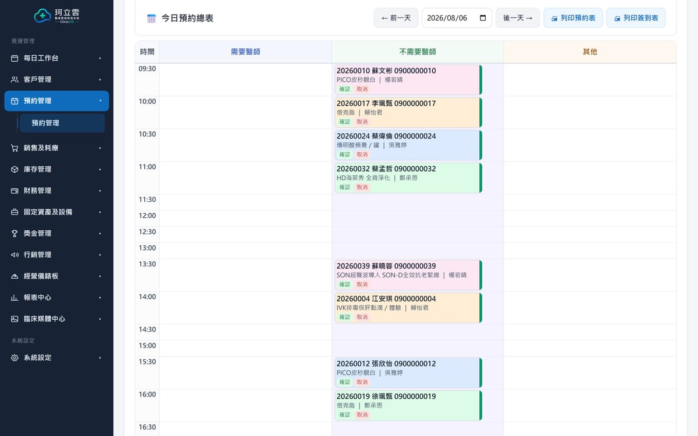
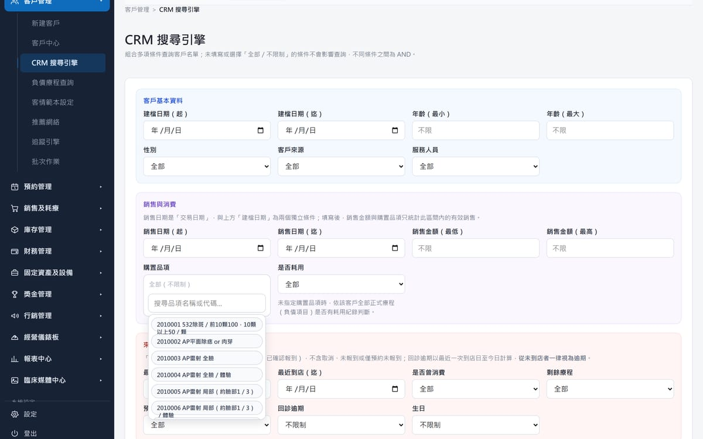
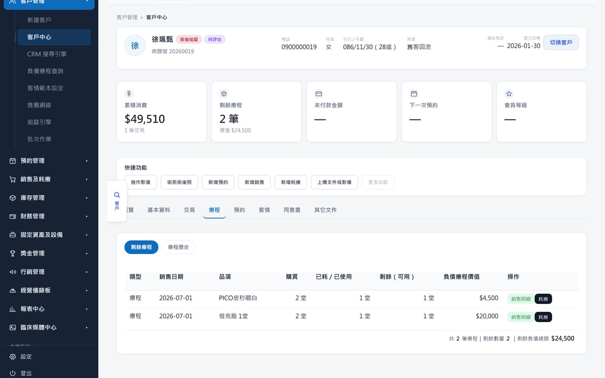
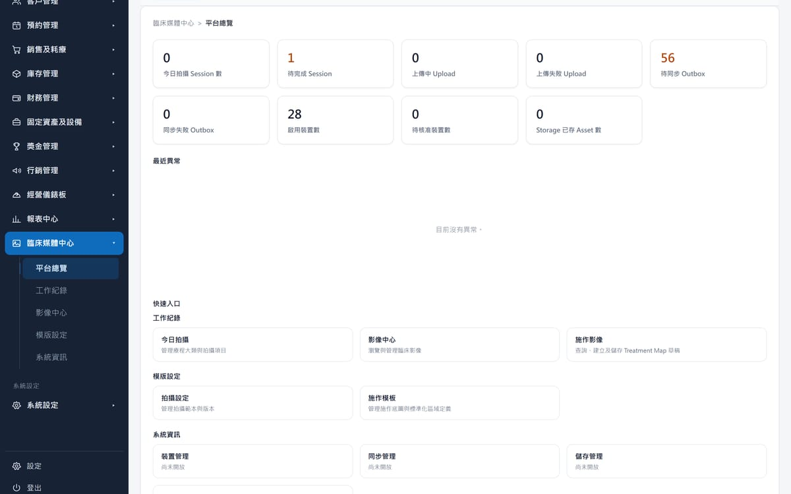
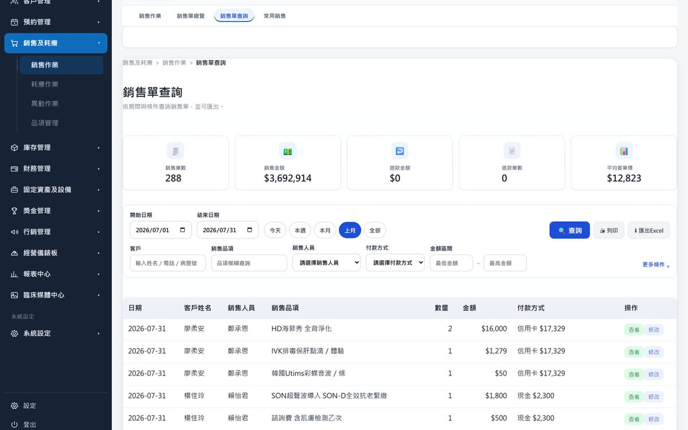
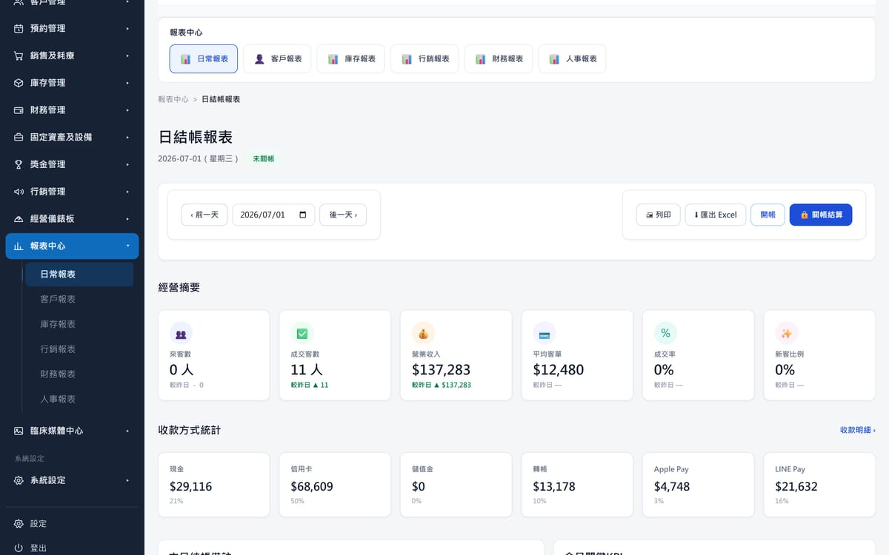

01 — 預約安排
把一天，排進該有的位置。
預約不只是記下一個時間，而是決定這一天怎麼走。
- 依日期、時段、服務人員與醫師建立預約
- 當下就看得到該時段已經約了幾個人
- 診所休診與員工休假自動擋掉，不必記在腦子裡
- 還沒建病歷的新客，也能先把時間留下來

Chapter 03 · 日常
診所的日常不是七個功能，是七件一直在發生的事。這一頁，一件一件看。
這七件事本來就會發生，有沒有系統都一樣。差別只在於：做完之後，它有沒有留在下一個人接得到的地方。
01 — 預約安排
預約不只是記下一個時間，而是決定這一天怎麼走。

02 — 客戶管理
客戶不是一份名冊，而是一組隨時可以被找出來的條件。

03 — 療程紀錄
療程不是一次交易，是一段還沒走完的關係。

04 — 臨床影像
真正重要的是，它有沒有安全地回到這位客人的紀錄上。

05 — 銷售管理
銷售不是結完帳就結束，而是隨時要能被回頭問起。

06 — 耗材管理
耗材不是成本表上的一個數字，是每天真的會用完的東西。

07 — 數據分析
報表不是月底才做的事，是每天都應該看得到的事。

預約排進去的人，會出現在療程紀錄裡；療程扣掉的那一堂，會出現在銷售與耗材裡；這些加起來，才是晚上那張日結帳報表。
所以真正該問的不是「有沒有這個功能」，而是「這一段做完之後，下一段接不接得到」。
本頁七張產品畫面擷取自 ClinicOS 展示環境，資料期間為 2026 年 7 月。 畫面中的姓名、電話、品項與金額皆為示範資料，不對應任何真實顧客或診所。